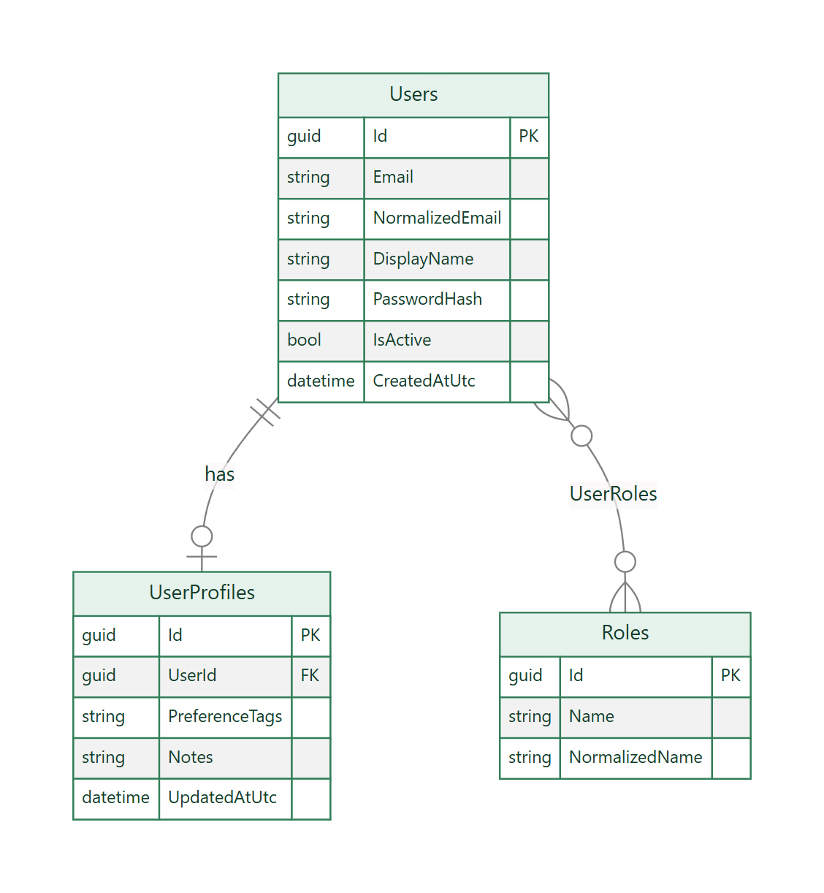
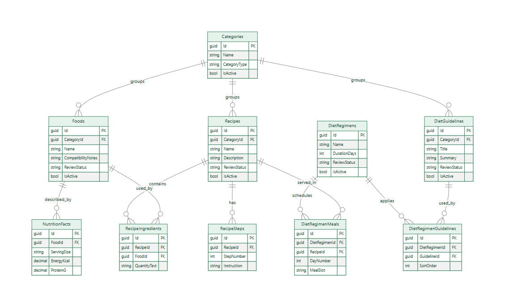
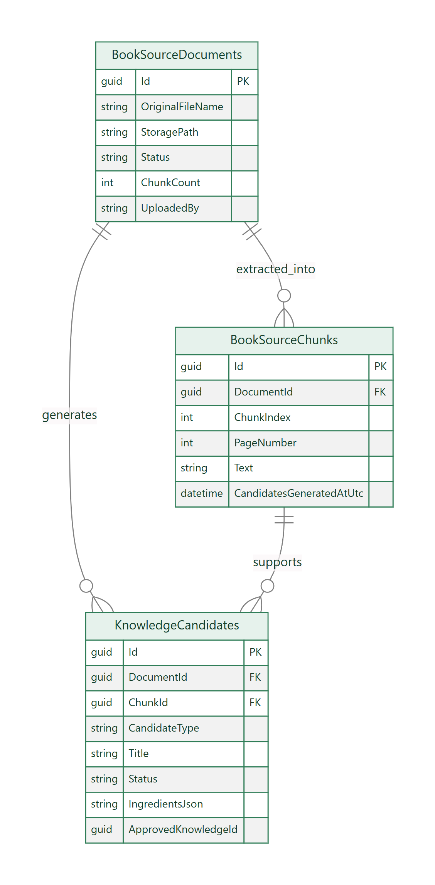
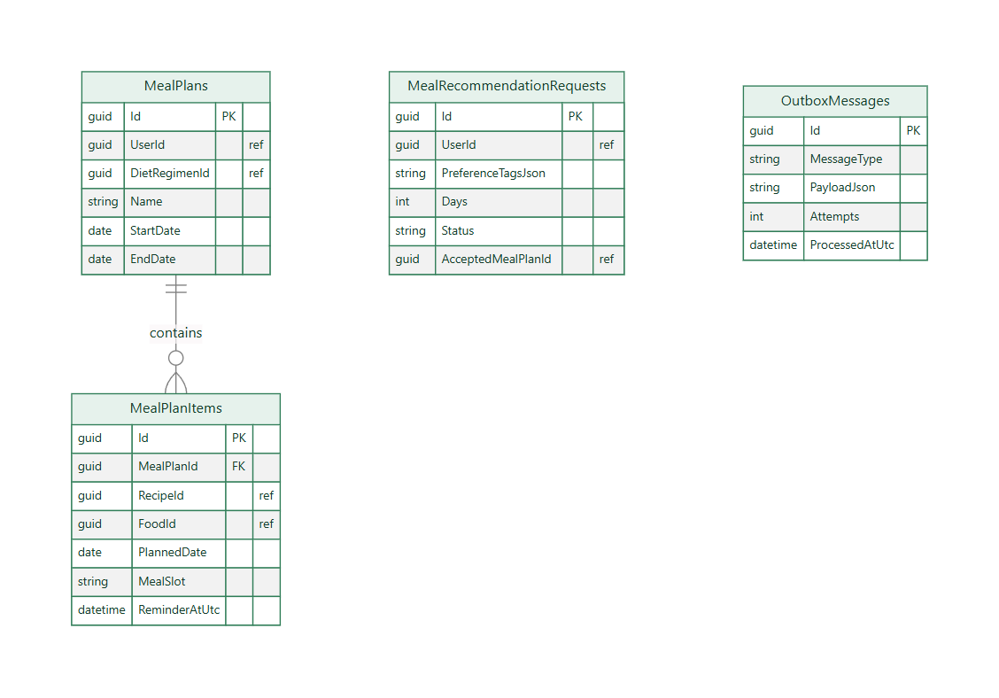
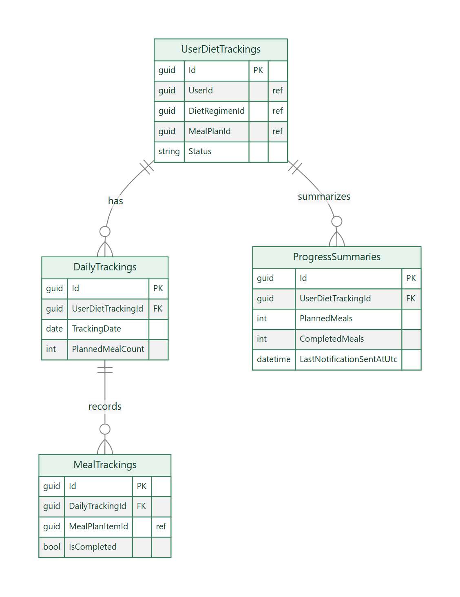
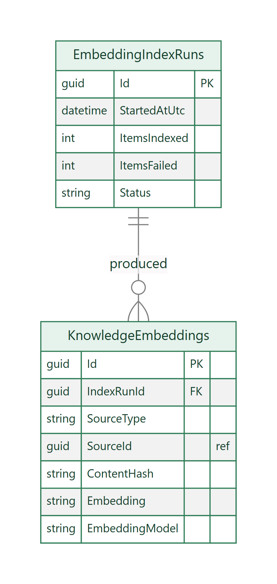
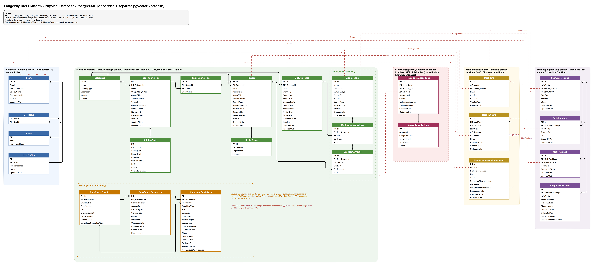

| Document | Entity-Relationship and Physical Database Specification |
| Version | 1.0 (2026-11-12) |
| Editable source | database/LongevityDiet-Database.drawio |
Each stateful service owns its database. There is no shared schema, no cross-database read and no cross-database foreign key. Where one service refers to data of another, it stores a bare ID (a “ref”) that is validated through the owning service's API.
| Database | Owner service | Host port | Module | Tables |
|---|---|---|---|---|
| IdentityDb | Identity | 5433 | 1 – User | Users, Roles, UserRoles, UserProfiles |
| DietKnowledgeDb | Diet Knowledge | 5434 | 2 – Diet, 3 – Diet Regimen | Categories, DietGuidelines, Foods, NutritionFacts, Recipes, RecipeIngredients, RecipeSteps, DietRegimens, DietRegimenGuidelines, DietRegimenMeals, BookSourceDocuments, BookSourceChunks, KnowledgeCandidates |
| MealPlanningDb | Meal Planning | 5435 | 4 – Meal Plan | MealPlans, MealPlanItems, MealRecommendationRequests, OutboxMessages |
| TrackingDb | Tracking | 5436 | 5 – UserDietTracking | UserDietTrackings, DailyTrackings, MealTrackings, ProgressSummaries |
| VectorDb (pgvector) | Diet Knowledge | 5437 | Search index | KnowledgeEmbeddings, EmbeddingIndexRuns |
Recommendation Service, Notification Service and Notification Worker are stateless and have no database.



These tables hold uploaded-source metadata, extracted chunks and review candidates. They are never exposed publicly and never embedded. ApprovedKnowledgeId is polymorphic (guideline, food or recipe) and therefore not a foreign key.

There is no MealSchedule table: scheduling is stored on MealPlanItems as PlannedDate, MealSlot and ReminderAtUtc. OutboxMessages implements the transactional outbox.


Embedding is vector(768) with an HNSW index (cosine distance). Only active Approved content is embedded.
| Table | Columns and rules |
|---|---|
| Users | Id, Email, NormalizedEmail (unique), DisplayName, PasswordHash, IsActive, CreatedAtUtc |
| Roles | Id, Name, NormalizedName — seeded: User, Admin |
| UserRoles | Join table (UserId, RoleId) |
| UserProfiles | Id, UserId (FK, one per user), PreferenceTags (comma separated, ≤ 20), Notes, UpdatedAtUtc |
| Table | Columns and rules |
|---|---|
| Categories | Id, Name, CategoryType (Food | Recipe | Guideline), Description, IsActive, CreatedAtUtc |
| DietGuidelines | Id, CategoryId?, Title (unique), Summary, SourceNote, Source{Title,Chapter,Page,Reference}, ReviewStatus, ReviewedBy, ReviewedAtUtc, IsActive, CreatedAtUtc, UpdatedAtUtc |
| Foods | Id, CategoryId (FK), Name (unique), CompatibilityNotes, Source*, ReviewStatus, ReviewedBy, ReviewedAtUtc, IsActive, timestamps |
| NutritionFacts | Id, FoodId (FK), ServingSize, EnergyKcal, ProteinG, CarbohydrateG, FatG, FiberG, SourceReference |
| Recipes | Id, CategoryId?, Name (unique), Description, Source*, ReviewStatus, ReviewedBy, IsActive, timestamps |
| RecipeIngredients | Id, RecipeId (FK), FoodId (FK), QuantityText |
| RecipeSteps | Id, RecipeId (FK), StepNumber (unique per recipe), Instruction |
| DietRegimens | Id, Name (unique), Description, DurationDays (1–365), Source*, ReviewStatus, IsActive, timestamps |
| DietRegimenGuidelines | Id, DietRegimenId (FK), GuidelineId (FK), SortOrder, Note |
| DietRegimenMeals | Id, DietRegimenId (FK), RecipeId (FK), DayNumber, MealSlot, Notes |
| BookSourceDocuments | Id, OriginalFileName, StoredFileName, ContentType, FileSizeBytes, StoragePath, Status (Uploaded | Chunked | Failed), UploadedBy, UploadedAtUtc, ProcessedAtUtc, ChunkCount, ErrorMessage |
| BookSourceChunks | Id, DocumentId (FK), ChunkIndex, PageNumber, Text, CharacterCount, TokenEstimate, CreatedAtUtc, CandidatesGeneratedAtUtc |
| KnowledgeCandidates | Id, DocumentId (FK), ChunkId (FK), CandidateType, Title, Summary, Source*, IngredientsJson, Status (NeedsReview | Approved | Rejected), GeneratedBy, CreatedAtUtc, ReviewedBy, ReviewedAtUtc, ApprovedKnowledgeId (ref) |
| Table | Columns and rules |
|---|---|
| MealPlans | Id, UserId (ref), DietRegimenId? (ref), Name, StartDate, EndDate, CreatedAtUtc, UpdatedAtUtc |
| MealPlanItems | Id, MealPlanId (FK), PlannedDate, MealSlot, RecipeId? (ref), FoodId? (ref) — exactly one of the two, Notes, ReminderAtUtc, timestamps |
| MealRecommendationRequests | Id, UserId (ref), PreferenceTagsJson, Days (1–14), Status (Pending | Completed | Accepted), SuggestedMealTitlesJson, Disclaimer, AcceptedMealPlanId? (ref), RequestedAtUtc, CompletedAtUtc, UpdatedAtUtc |
| OutboxMessages | Id, MessageType (ReminderRequested | RecommendationRequested), PayloadJson, CreatedAtUtc, NextAttemptAtUtc, Attempts, LastError, ProcessedAtUtc |
| Table | Columns and rules |
|---|---|
| UserDietTrackings | Id, UserId (ref), DietRegimenId? (ref), MealPlanId? (ref), StartDate, EndDate?, Status (Active | Completed | Cancelled) — one Active per user |
| DailyTrackings | Id, UserDietTrackingId? (FK), UserId (ref), TrackingDate, Notes, PlannedMealCount (0–50), timestamps |
| MealTrackings | Id, DailyTrackingId (FK), MealPlanItemId (ref), IsCompleted, CompletedAtUtc, timestamps |
| ProgressSummaries | Id, UserDietTrackingId? (FK), UserId (ref), PeriodStartDate, PeriodEndDate, PlannedMeals, CompletedMeals, CalculatedAtUtc, LastNotificationId, LastNotificationSentAtUtc |
| Table | Columns and rules |
|---|---|
| KnowledgeEmbeddings | Id, IndexRunId (FK), SourceType (Guideline | Food | Recipe) + SourceId (ref, unique together), ContentHash (SHA-256), Content (≤ 4000 chars), Embedding vector(768), EmbeddingModel, timestamps |
| EmbeddingIndexRuns | Id, StartedAtUtc, CompletedAtUtc, ItemsIndexed, ItemsFailed, Status (Running | Completed | CompletedWithErrors | Failed) |
| Column | Located in | Points to | Verified how |
|---|---|---|---|
| UserId | MealPlans, MealRecommendationRequests, UserDietTrackings, DailyTrackings, ProgressSummaries | Identity.Users | JWT claim |
| RecipeId / FoodId | MealPlanItems | DietKnowledge.Recipes / Foods | HTTP call to Diet Knowledge (Approved + active) |
| DietRegimenId | MealPlans, UserDietTrackings | DietKnowledge.DietRegimens | Not verified (reference only) |
| MealPlanId | UserDietTrackings | MealPlanning.MealPlans | Not verified (reference only) |
| MealPlanItemId | MealTrackings | MealPlanning.MealPlanItems | Client-supplied |
| SourceId | KnowledgeEmbeddings | DietKnowledge guideline/food/recipe | Indexer reads Approved content |
| Service | Migrations |
|---|---|
| Identity | InitialIdentitySchema, AddUserProfiles |
| Diet Knowledge | InitialDietKnowledgeSchema, AddBookKnowledgeReviewMetadata, AddBookSourceIngestion, AddChunkCandidatesGeneratedAt, AddCandidateIngredients, AddCategoriesRegimensNutrition |
| VectorDb | InitialVectorSchema |
| Meal Planning | InitialMealPlanningSchema, AddMealPlanDietRegimenId, AddOutboxMessages |
| Tracking | InitialTrackingSchema, AddUserDietTracking, AddDailyTrackingPlannedMealCount |
